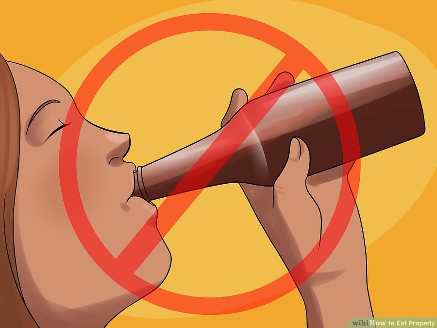

Eating is very important!
Step 1 - Eat a balanced diet.
-
Eat a balanced diet. Make sure you don't eat too much or eat things that will get you sick. Include a healthy balance of nutrient-rich carbohydrates such as fruits, vegetables, and roots like potatoes. This will help make sure your body gets the right balance of the vital vitamins and minerals it needs in order to keep you strong and healthy.
-
Eat a diet of 30% vegetables (dark colored vegetables, such as spinach, are better) 20% fruit ( eat the ones with more nutritional value, such as pomegranates), 20% carbohydrates (starches like wheat, rice and oats), 20% protein (which is found in meat, beans, and legumes), and 10% dairy products.
-
Eating a diet of 80% carbohydrates such as fruits, vegetables, and starches like wheat, rice, and corn, 10% protein (which is found in meat, beans, and legumes), and 10% fats.
Step 2 - Don't skip meals.
-
Don't skip meals. Always eat breakfast, as this starts your metabolism going early in the morning (since it slows down at night because you haven't eaten anything for a while). You will also want to make sure to eat at regular intervals, to help make sure your body has the fuel it needs to run all day.
-
Don't drink chemicals masquerading as food. It is a good idea to drink water, juices, smoothies, teas, and the such. However, soda, cola, and drinks that look like they are made in a lab should definitely be avoided. Alcohol needs to be limited.
Step 3 - Eat Properly
-
Eat fewer unhealthy fats and empty calories. Generally reduce the amount of unhealthy saturated and trans fats in your diet. These are found in foods like chips, margarine, oils and many boxed or frozen foods. Coconut oil is relatively the healthiest, but still not good.
-
Eat more nutrient rich foods. Try to focus on eating foods which deliver lots of vital nutrients to your body. These are foods rich in vitamins and minerals. You can try citrus fruits, dark greens like kale and spinach, grains like brown rice and quinoa, lean proteins like lentils and chickpeas.

Step 4 - Eating the Right Amount
-
Eat when you’re hungry, stop when you're full, and avoid eating too much. Many people seem to think that people get hungry at about 9 AM, 12 noon, and again at 7 PM. While this may be a generally good schedule for eating, remember that you don't have to eat at mealtime if you're not hungry yet. You should also remember not to eat until you are full because food will not have gone down your digestive system yet, so you could be left feeling a bit nauseous. Also, if you are hungry between meals, go ahead and eat a meal. It's not good to starve yourself between meals: if you allow yourself to become too hungry, you'll just eat tons of quick easy garbage.
-
Eat better portion sizes. Remember that your stomach is about the size of your fist. Don't expect to stuff 10 times that amount of junk into it without negative consequences. However, if you eat lots of fruits, you should eat a lot, as you will have lots of energy and be vibrant throughout the day.
-
Don’t worry about how many calories you’re eating. After all, a cow can graze all day and not become obese! If you eat lots of dairy and meat, however, you will inevitably end up either starving or gaining weight. Eat lots of fruits and veggies!
Step 5 - Building Healthy Ideas About Food
-
Don’t get suckered in to fad diets. Sufficient protein, a variety of fats (including Omega 3 fat, commonly found in fish oil and seeds), and carbohydrates such as fruits and vegetables are essential to the body functioning correctly. Don't fall for fad diets that involve restricting any one macro nutrient.
-
If you find yourself fantasizing about food, you have a problem. If your diet is good enough and sufficient in calories and carbohydrates, you'll be full and happy. Fantasizing about food is a good indicator you're doing something wrong.
-
Don’t eat a huge meal when you go out. It’s very reasonable to want to eat a delicious meal at a restaurant, especially if you aren’t a very good cook. But understand that restaurant meals are often way too big. You shouldn’t eat that much food in one sitting! Instead, eat only half the meal and save the rest for lunch the next day. You can also order an appetizer, rather than a full meal if you know those portions may be better.